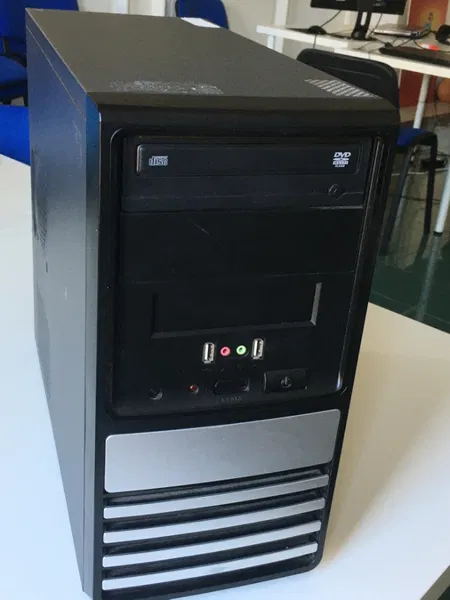

|  | процесор: 1,8 GHz, двуядрен RAM: DDR2, 2 GB слотове: PCI, PCIe x16(x2), PCIe x1 конектори: PS/2(x2), COM, Paralel printer, VGA, USB 2.0(x4), LAN(RJ45), soundblaster(x6), ATX, IDE(x2), SATA(x2), FDD, USB FP(x2), FAN(x2) видео карта: 512 MB Дискови устройства: HDD - 100 GB, DVD(x2), FDD - 3,5' perating system: windows vista ЦЕНА: 100 лв. |
| процесор: 1,73 GHz, двуядрен RAM: DDR3, 2 GB конектори: VGA, USB 2.0(x3), LAN(RJ45), soundblaster(x2) видео карта: 512 MB Дискови устройства: HDD - 80 GB, DVD(x1) perating system: windows 7 ЦЕНА: 300 лв. |
| Може да свързете домашен правец към своя телевизор, работи със аудиокасетки, през вашия домашен касетофон! perating system: DOS ЦЕНА: 100 лв. |
| 17 инча разделителна способност: 2 MGpx конектори: VGA, DVI ЦЕНА: 100 лв. |
| 14 инча Монитор с кинескоп, запазен ЦЕНА: 50 лв. |
| лазерна мишка, механична клавиатура конектор: PS/2 ЦЕНА: 10 лв. |
| механична клавиатура с кабел конектор: USB ЦЕНА: 10 лв. |
| 3 W конектор: 3,5 mm жак ЦЕНА: 20 лв. |